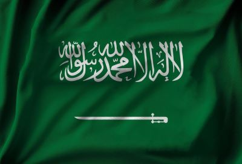

Saudi Arabia,officially the Kingdom of Saudi Arabia (KSA),is a country in West Asia. Located in the centre of the Middle East, it covers the bulk of the Arabian Peninsula and has a land area of about 2,150,000 km2 (830,000 sq mi), making it the fifth-largest country in Asia, the largest in the Middle East, and the twelfth-largest in the world.
It is bordered by the Red Sea to the west; Jordan,Iraq,and Kuwait to the north; the Persian Gulf,Bahrain, Qatar and the United Arab Emirates to the east; Oman to the southeast; and Yemen to the south. The Gulf of Aqaba in the northwest separates Saudi Arabia from Egypt and Israel.
The capital and largest city is Riyadh.other major cities include Jeddah and the two holiest cities in Islam, Mecca and Medina. With a population of 33.7 million, Saudi Arabia is the sixth most populous country in the Arab world.